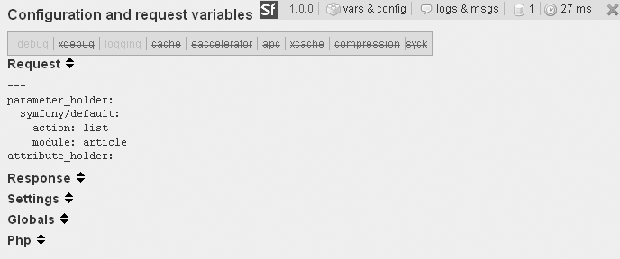

16.2. Depuración de aplicaciones
No importa lo buenos que sean los programadores o lo bueno que sea Symfony, siempre se acaban cometiendo errores. Una de las claves para el desarrollo rápido de aplicaciones es la detección y comprensión de los errores producidos. Afortunadamente, Symfony proporciona varias herramientas para depurar las aplicaciones.
16.2.1. Modo debug de Symfony
Symfony dispone de un modo llamado "debug" que facilita el desarrollo y la depuración de las aplicaciones. Cuando se activa este modo, ocurre lo siguiente:
- La configuración de la aplicación se comprueba en cada petición, por lo que cualquier cambio en la configuración se aplica inmediatamente, sin necesidad de borrar la cache de configuración.
- Los mensajes de error muestran la traza completa de ejecución de forma clara y útil, para que sea más fácil de encontrar el elemento que está fallando.
- Se muestran más herramientas de depuración (como por ejemplo, todas las consultas a la base de datos).
- También se activa el modo debug de Propel, por lo que cualquier error en la llamada a un objeto de Propel, muestra una lista completa de los errores producidos en toda la arquitectura Propel.
Por otra parte, cuando se desactiva el modo debug, las peticiones se procesan de la siguiente forma:
- Los archivos de configuración YAML se procesan una sola vez y se transforman en archivos PHP que se almacenan en la carpeta
cache/config/. Todas las peticiones que se realizan después de la primera petición, no tienen en cuenta los archivos YAML de configuración y utilizan en su lugar la configuración guardada en la cache. Por tanto, el procesamiento de cada petición es mucho más rápido. - Para forzar a que se vuelva a procesar la configuración de la aplicación, es necesario borrar a mano la cache de configuración.
- Cualquier error que se produzca durante el procesamiento de la petición, devuelve una respuesta con el código de estado
500(Error Interno del Servidor) y no se muestran los detalles internos del error.
El modo debug se activa para cada aplicación en su controlador frontal. Este modo se controla mediante el valor del tercer argumento que se pasa al método getApplicationConfiguration(), como se muestra en el listado 16-8.
Listado 16-8 - Controlador frontal de ejemplo con el modo debug activado, en web/frontend_dev.php
<?php require_once(dirname(__FILE__).'/../config/ProjectConfiguration.class.php'); $configuration = ProjectConfiguration::getApplicationConfiguration('frontend', 'dev', true); sfContext::createInstance($configuration)->dispatch();
Nota En el servidor de producción, no se debería activar el modo debug y no se debería guardar ningún controlador frontal con este modo activado. El modo debug no solo penaliza el rendimiento de la aplicación, sino que revela información interna de la aplicación. Aunque las herramientas de depuración nunca desvelan la información necesaria para conectarse con la base de datos, la traza generada en las excepciones está llena de información demasiado sensible y que puede ser aprovechada por un usuario malintencionado.
16.2.2. Excepciones Symfony
Cuando se produce una excepción y está activado el modo debug, Symfony muestra un mensaje de error muy útil que contiene toda la información necesaria para descubrir la causa del problema.
Los mensajes que produce la excepción están escritos de forma clara y hacen referencia a la causa más probable del problema. Normalmente ofrecen posibles soluciones para arreglar el error y para la mayoría de problemas comunes, incluso se muestra un enlace a la página del sitio web de Symfony que contiene más información sobre la excepción. La página con el mensaje de la excepción muestra en qué parte del código PHP se ha producido el error y la lista completa de los métodos que se han invocado, como se muestra en la figura 16-1. De esta forma, es posible seguir la traza de ejecución hasta la primera llamada que causó el problema. También se muestran los argumentos que se pasan a cada método.
Nota Symfony se basa en las excepciones de PHP para notificar los errores, que es un método mucho mejor que el funcionamiento de las aplicaciones desarrolladas con PHP 4. Para notificar un error de tipo 404, se utiliza el método sfError404Exception.
Figura 16.1 Mensaje mostrado por una excepción de una aplicación Symfony
Mientras se desarrolla la aplicación, las excepciones Symfony son de gran utilidad para depurar el funcionamiento de las aplicaciones.
16.2.3. Extensión Xdebug
La extensión Xdebug de PHP (http://xdebug.org/) permite ampliar la cantidad de información que el servidor web almacena en los archivos de log. Symfony es capaz de integrar los mensajes de Xdebug en sus propios mensajes de error, por lo que es una buena idea activar esta extensión cuando se están depurando las aplicaciones. La instalación de la extensión depende de la plataforma en la que se realiza, por lo que se debe consultar la información disponible en el sitio web de Xdebug. Una vez instalada, se activa manualmente en el archivo de configuración php.ini. En los sistemas *nix, se activa añadiendo la siguiente línea:
zend_extension="/usr/local/lib/php/extensions/no-debug-non-zts-20041030/xdebug.so"
En los sistemas Windows, la activación de Xdebug se realiza mediante:
extension=php_xdebug.dll
El listado 16-9 muestra un ejemplo de la configuración de Xdebug, que también se debe añadir al archivo php.ini.
Listado 16-9 - Configuración de ejemplo para Xdebug
;xdebug.profiler_enable=1 ;xdebug.profiler_output_dir="/tmp/xdebug" xdebug.auto_trace=1 ; enable tracing xdebug.trace_format=0 ;xdebug.show_mem_delta=0 ; memory difference ;xdebug.show_local_vars=1 ;xdebug.max_nesting_level=100
Por último, para activar la extensión Xdebug, se debe reiniciar el servidor web.
Nota No debe olvidarse desactivar la extensión Xdebug en el servidor de producción. Si no se desactiva, el rendimiento de la aplicación disminuye notablemente.
16.2.4. Barra de depuración web
Los archivos de log guardan información muy útil, pero no siempre son fáciles de leer. La tarea más básica, que consiste en localizar las líneas del archivo de log correspondientes a una determinada petición, suele complicarse cuando existen varios usuarios simultáneos en la aplicación y cuando el archivo de log es muy grande. En ese momento es cuando se hace necesaria la barra de depuración web.
Esta barra de depuración se muestra como una caja semitransparente superpuesta sobre el contenido de la ventana del navegador y que aparece en la esquina superior derecha, como se ve en la figura 16-2. Esta barra permite acceder directamente a los eventos guardados en el log, a la configuración actual, las propiedades de los objetos de la petición y de la respuesta, los detalles de las consultas realizadas a la base de datos y una tabla con los tiempos empleados en cada elemento de la petición.
Figura 16.2 La barra de depuración web se muestra en la esquina superior derecha de la ventana del navegador
El color de fondo de la barra de depuración web depende del máximo nivel de los mensajes de log producidos durante la petición. Si ningún mensaje pasa del nivel debug, la barra se muestra con color de fondo gris. Si al menos un mensaje alcanza el nivel err, la barra muestra un color de fondo rojo.
Nota No debe confundirse el modo debug y la barra de depuración web. La barra se puede mostrar incluso cuando el modo debug está desactivado, aunque en este caso, muestra mucha menos información.
Para activar la barra de depuración web en una aplicación, se utiliza la opción web_debug del archivo de configuración settings.yml. En los entornos de ejecución prod y test, el valor por defecto de la opción web_debug es off, por lo que se debe activar manualmente si se necesita. En el entorno de ejecución dev, esta opción tiene un valor por defecto de on, tal y como muestra el listado 16-10.
Listado 16-10 - Activando la barra de depuración web, en frontend/config/settings.yml
dev: .settings: web_debug: on
Cuando se muestra la barra de depuración web, ofrece mucha información:
- Si se pincha sobre el logotipo de Symfony, la barra se oculta. Cuando está minimizada, la barra no oculta los elementos de la página que se encuentran en la esquina superior derecha.
Como muestra la figura 16-3, cuando se pincha sobre la opción
vars & config, se muestran los detalles de la petición, de la respuesta, de las opciones de configuración, de las opciones globales y de las propiedades PHP. La línea superior resume el estado de las opciones de configuración más importantes, como el modo debug, la cache y la presencia/ausencia de un acelerador de PHP (su nombre aparece en rojo si está desactivado y en color verde si se encuentra activado).Figura 16.3 La sección "vars & config" muestra todas las variables y constantes de la petición
Cuando la cache se encuentra activada, se muestra una flecha verde en la barra de depuración web. Si se pulsa sobre esta flecha, la página se vuelve a procesar entera, independientemente de si se encuentra almacenada en la cache (no obstante, la cache no se vacía al pulsar sobre esta flecha).
- Como muestra la figura 16-4, al pulsar sobre la sección
logs & msgs, se muestran los mensajes de log para la petición actual. En función de la importancia de los eventos, las líneas se muestran en gris, amarillo o rojo. Mediante los enlaces que se muestran en forma de lista en la parte superior, es posible filtrar los mensajes de log en función de su categoría.
Figura 16.4 La sección "logs & msgs" muestra los mensajes de log de la petición actual
Nota Cuando la acción es el resultado de una redirección, solamente se muestran los mensajes de log de la última petición, por lo que es imprescindible consultar los archivos de log completos para depurar las aplicaciones.
- Si durante el procesamiento de la petición se han ejecutado consultas SQL, se muestra un icono de una base de datos en la barra de depuración web. Si se pulsa sobre este icono, se muestra el detalle de las consultas realizadas, como se muestra en la figura 16-5.
- A la derecha del icono del reloj se muestra el tiempo total de procesamiento requerido por la petición. Como el modo debug y la propia barra de depuración consumen muchos recursos, el tiempo que se muestra es mucho más lento que la ejecución real de la petición. Por tanto, es más importante fijarse en las diferencias de tiempos producidas por los cambios introducidos que en el propio tiempo mostrado. Si se pulsa sobre el icono del reloj, se muestran los detalles del tiempo de procesamiento de cada categoría, tal y como se muestra en la figura 16-6. Symfony muestra el tiempo consumido en las diferentes partes que componen el procesamiento de la petición. Como solamente tiene sentido optimizar el tiempo de procesamiento propio de la petición, no se muestra el tiempo consumido por el núcleo de Symfony. Esta es la razón por la que la suma de todos los tiempos individuales no es igual al tiempo total mostrado.
- Si se pulsa sobre la X roja a la derecha de la barra, se oculta la barra de depuración web.
Figura 16.5 La sección de consultas a la base de datos muestra las consultas ejecutadas durante la petición actual
Figura 16.6 El icono del reloj muestra el tiempo de ejecución dividido por categorías
Nota La barra de depuración web no se incluye por defecto en las respuestas de tipo Ajax y en los documentos cuyo Content-Type no es de tipo HTML. Para el resto de las páginas, se puede deshabilitar la barra de depuración web manualmente desde la acción mediante la llamada a sfConfig::set('sf_web_debug', false).
16.2.5. Depuración manual
Aunque muchas veces es suficiente con acceder a los mensajes de log generados por el framework, en ocasiones es mejor poder generar mensajes de log propios. Symfony dispone de utilidades, que se pueden acceder desde las acciones y desde las plantillas, para crear trazas sobre los eventos y/o valores presentes durante la ejecución de la petición.
Los mensajes de log propios aparecen en el archivo de log de Symfony y en la barra de depuración web, como cualquier otro mensaje de Symfony. (El listado 16-5 anterior muestra un ejemplo de la sintaxis de un mensaje de log propio). Los mensajes de log propios se pueden utilizar por ejemplo para comprobar el valor de una variable en una plantilla. El listado 16-11 muestra cómo utilizar la barra de depuración web desde una plantilla para obtener información para el programador (también se puede utilizar el método $this->logMessage() desde una acción).
Listado 16-11 - Creando un mensaje de log propio para depurar la aplicación
<?php use_helper('Debug') ?> ... <?php if ($problem): ?> <?php log_message('{sfAction} ha pasado por aquí', 'err') ?> ... <?php endif ?>
Si se utiliza el nivel err, se garantiza que el evento sea claramente visible en la lista de mensajes, como se muestra en la figura 16-7.
Figura 16.7 Mensaje de log propio en la sección "logs & msgs" de la barra de depuración web
Compartir
Indice de contenidos
- 1 Introducción a Symfony
- 2 Explorando el interior de Symfony
- 3 Ejecutar aplicaciones Symfony
- 4 Introducción a la creación de páginas
- 5 Configurar Symfony
- 6 El Controlador
- 7 La Vista
- 8 El modelo (Doctrine)
- 9 Enlaces y sistema de enrutamiento
- 10 Formularios
- 11 Emails
- 12 Uso de la cache
- 13 Internacionalización y localización
- 14 Generador de la parte de administración
- 15 Pruebas unitarias y funcionales
- Capítulo 16. Herramientas para la administración de aplicaciones
- 16.1. Logs
- 16.2. Depuración de aplicaciones
- 16.3. Utilizando Symfony fuera de la web
- 16.4. Cargando datos en una base de datos
- 16.5. Instalando aplicaciones
- 16.6. Resumen
- 17 Personalizar Symfony
- 18 Rendimiento
- 19 Configuración avanzada